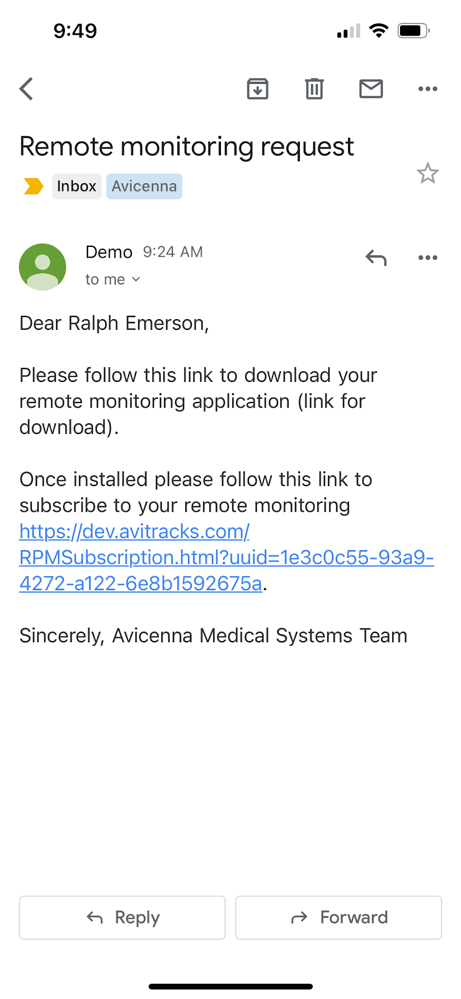
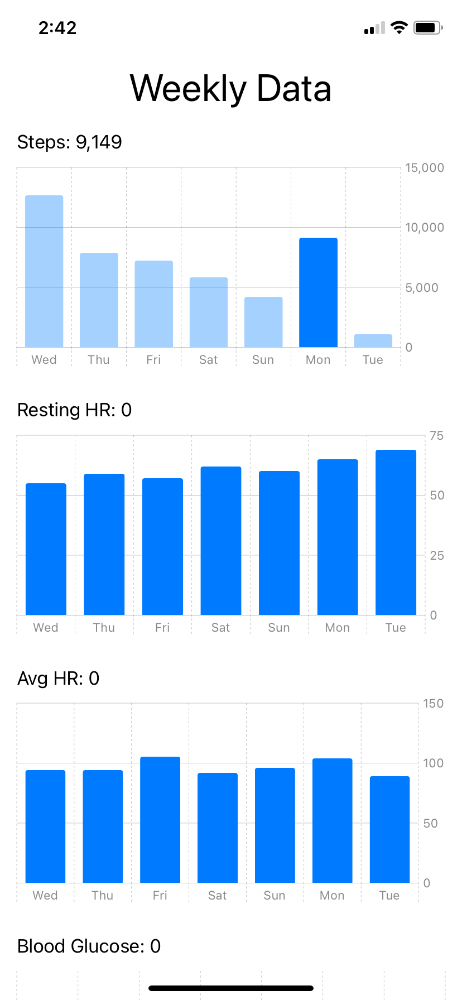
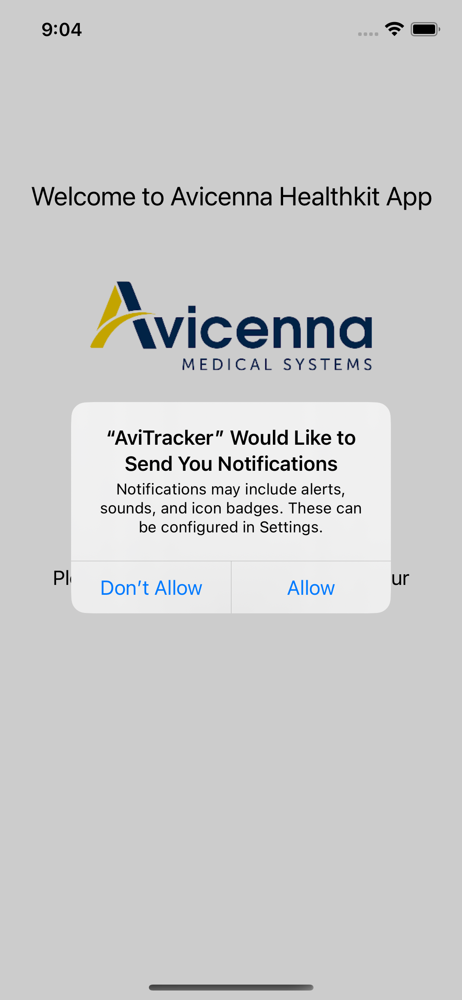

Problem
Providers can't remotely monitor comprehensive health data from patients, which hinders timely interventions.
Remote patient monitoring that streams Apple Health data to physicians.
AviTracks is an iPhone app for remote patient monitoring. It connects to Apple Health, which aggregates measurements from the iPhone, smartwatches, and other smart devices, and sends that data to Avicenna's platform through their API, where the patient's doctor can review it.
Wearables have made it practical for healthcare providers to monitor patients between visits and intervene early. Avicenna wanted a mobile app that tapped into that: pull a patient's health data from Apple Health and put it in front of their doctor in real time, reducing the need for in-person visits, especially for patients with chronic conditions or ongoing care.
Patient health data has to stay private, so security came before any data collection. The patient downloads the app from a link that Avicenna emails them. The app then texts them a one-time code, and entering it authenticates the device. After that first login the authentication is stored locally, and the app opens normally.
Once authenticated, the patient grants permission for the specific health measurements their doctor needs, and nothing more.



The first time the app loads, it fetches and sends the last week of measurements from HealthKit. Every open after that sends everything from the previous sync up to the last whole day. That logic sounds simple and wasn't: there are a lot of edge cases, and it took a lot of testing to guarantee the provider a steady, gap-free stream of data even when the patient skips a day.
The original plan was to upload in the background without the patient opening the app at all. There were several cases where the data wouldn't send, and it was overcomplicating the design for an MVP, so I cut it. Since the patient needs to open the app daily, it instead asks permission to send one reminder notification a day.
The MVP asked for one patient-facing screen: charts of the health data being collected and sent. Patients can hold and drag on a chart to read a specific data point.
I first built the charts with a third-party package. As I was finishing, Apple announced SwiftUI Charts, and the native library was much better, so I restarted with that.
On Avicenna's side, the data lands in their database through their API, where another developer built the portal doctors use to review it.


The MVP was delivered to Avicenna, with testing on select patients as the next step.